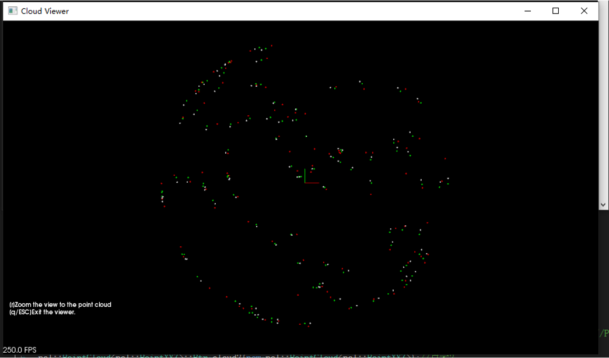
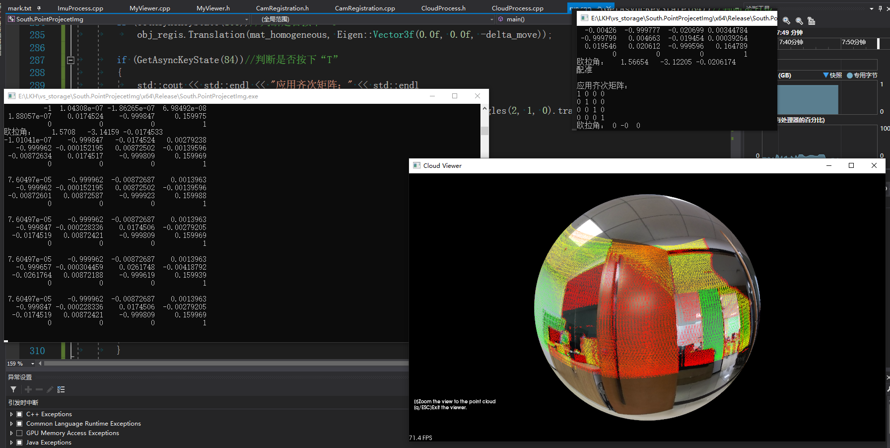
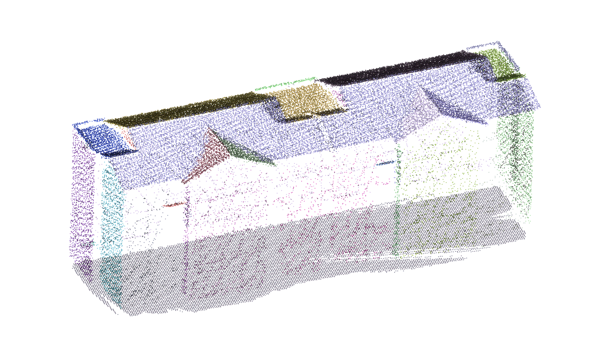
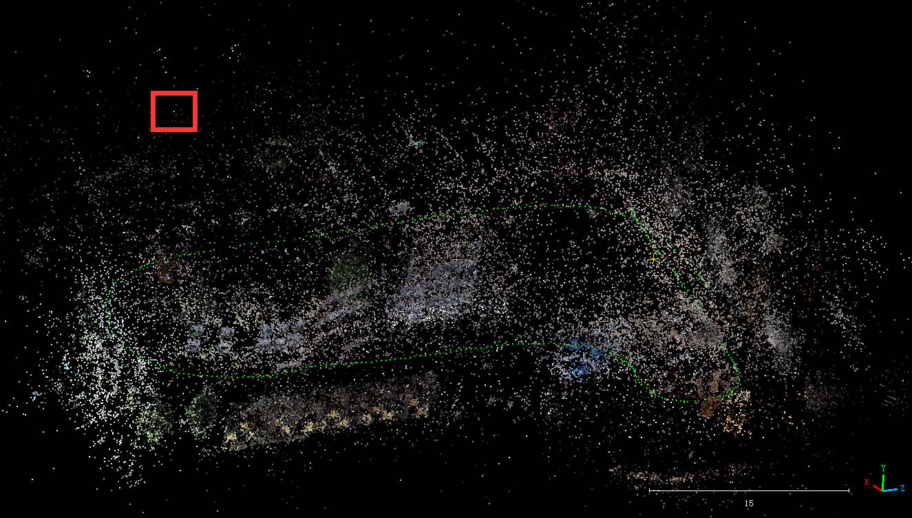
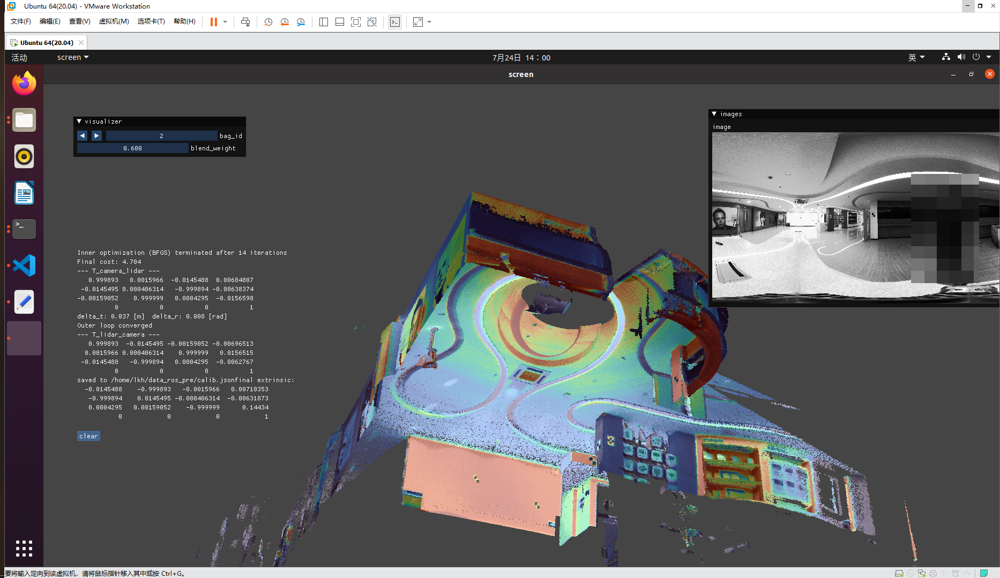

别急，就当简历的项目经历来写，偏项目、技能方面，毕竟要展示给别人看。
也不尽然，就尽量搜罗下还能记起的节点，整理到这个页面。
过眼云烟，回首又度一年秋。
2018-2019
2017.09，就读于湖南科技大学测绘工程专业，攻读学士学位。
2017.10，湖科大校运会志愿服务，评先进工作者。
2018.05-2019.05，任学院心理健康部副部，更新网页内容、组织情景剧表演。
2019.03-2019.06，学校外业实践:湘潭锰矿公园的GPS静态测量。布设GPS接收机，HGO解算基线、网平差。
2019.06，湖科大北校区数字测图，布设碎部点、Cass绘制地物。
2019.10，“中海达杯”测绘综合竞赛，程序设计项目一等奖（院级）。
2019.12，湖南省第二届大学生测绘综合技能竞赛，测量程序设计一等奖（省级）。
2020-2021
2020.01-2020.? 疫情期间居家学习，地籍学挂科补考。
2020.07-2020.12 备考中南大学，总分325差20未进复试，思政73、英一56、数一82、误差理论与测量平差基础114。man，what can i say. 跟脚不够，年轻太气盛。
2021.01-2021.04 调剂进河南理工大学。感慨至少还有个学上，冲着能学两手激光扫描技术去的。
2021.02-2021.06 本科毕业设计《基于C#和Unity3D的虚拟校园导览系统设计与实现》，基于卫星遥感影像及数字测图的CAD图纸，通过3dsMax建模南校区场景、建筑物，Unity3D设计漫游导航系统。


2021.06-2021.07 实习于广东置信勘测规划信息工程有限公司，质检员。
相关记录: https://www.bilibili.com/read/readlist/rl430508
项目：中山市坦洲镇七村改造区的房屋一体化测量。
工作内容:
1、房屋一体化测量。复测作业区村舍、房屋的结构（主体、阳台、飘楼、外梯等）尺寸，绘制草图。
2、统计外业组的测量数据，标记超出限差的边长。计算房屋点间距精度，撰写质量评价表。
3、Cass软件修改外业组的房屋平面CAD图，标出原图的超限边长和错分、漏分的房屋部分。
2021.09 就读于河南理工大学测绘科学与技术专业，攻读硕士学位。（时年7月郑州特大暴雨）
2021.10-2021.12 厂房变形监测内业处理，用CloudCompare分离、标记煤厂房点云的主钢架结构。
2022
2022.01-2022.02 和阿弟共同制作Unity3D同人小游戏《死亡突围X像素鸟》，自娱自乐性质，粗略了解一种游戏开发流程。
2022.05-2023.03 撰写《基于车载LiDAR点云的路边地上物多阶段聚类分割算法》，见刊于《地理与地理信息科学》，属CSCD核心库。感谢导师栽培ԅ(¯﹃¯ԅ)
2022.10-2023.03 开发高精地图数据转换工具，将表示路灯、树木、道路线的矢量数据转换为.xodr格式的opendrive文件。
工作内容：C++实现，计算道路坐标系下节点间的距离、方位角、曲率。
在opendrive规范下生成line类型的双向车道和arc类型的弯道、路口。
2023
2023.02-2023.05 配置、运行PVIO程序，初识Ubuntu系统及命令行操作。
2023.06-2023.11 了解City3D算法，运行CGAL库中开源的PolyFit点云三维重建算法。
2023.11-2024.02 实习于南方测绘广州分公司，任图像处理组的算法实习生。
相关记录：https://www.bilibili.com/opus/909339671460315161
项目：手持扫描仪Escan的全景相机功能开发。
工作内容：
（1）惯导单元的旋转标定。按时间戳筛选、对齐加速度对，累加为整体的旋转关系，SVD分解出传感器间的旋转外参。
（2）搭建点云赋色框架。框架整体流程：影石X3相机采集、拼接符合等距圆柱形投影的全景图；雷达->相机外参标定（静态标定精度4cm）；直角->球面->像素坐标系变换；点与图像匹配（掩膜剔除、深度缓冲分析）。框架缺点：图像不参与位姿优化，pose全依赖时间软同步+slam解算，动态赋色精度4cm（室内）-15cm（室外）。
(3)手眼标定思路的雷达-相机外参标定框架。将静止状态下的雷达点、全景图映射到球面，对点云做6DOF的平移旋转微调，再目视检查强度与颜色的对齐情况来确定外参RT。缺陷：微调顺序严格且繁琐；由于点云映射到球面上丢失深度信息，仅能矫正旋转平移量有误差。
后放弃手眼思路改为pnp匹配点思路，由于仍以球面数据为输入，仍存在上述缺陷。
2024
2024.03-2024.06 毕业论文《联合机载与车载LiDAR点云的建筑物一体化三维重建》。在PolyFit框架（点云聚类；平面拟合、相交细分；闭合模型约束、能量函数最小化）的基础上，添加预处理过程和一个屋顶偏好能量项：前者填充建筑底部以提高点云完整性，后者引导求解结果为顶面结构更丰富的面集组合。

2024.06 入职南方测绘广州分公司，任算法工程师，负责赋色、标定工作。（刚回来曾经带我的算法、软件同事基本溜溜球，中道崩殂了属于是。想你了kiwi）
2024.07 调整赋色模块的匹配逻辑：按最近时序匹配点云帧与图像帧；打包第一版的相机-雷达外参矩阵标定程序。
2024.08-2024.10 1、研究内置双鱼眼图像拼接方案；以外参偏移相机光心仅能稍微减轻视差（重叠区重影现象明显），加权平均融合后图像拼缝处仍有重影。
测试方案：
（1）Matlab的Camera Calibrator可做单目鱼眼标定，但只适用视场角150°以下的鱼眼镜头，一定夹角的双目标定无法对齐重叠区细节。Scaramuzza工具箱算出的基线长度及相机光轴间夹角有误差。
（2）OpenCV::fisheye模块不适用于矫正超过180°视场角的鱼眼图像，参考：
https://stackoverflow.com/questions/48990136/opencv-undistorts-only-a-central-part-of-fisheye-image/53500352#53500352
https://stackoverflow.com/questions/34316306/opencv-fisheye-calibration-cuts-too-much-of-the-resulting-image#:~:text=I%20am%20using%20OpenCV%20to%20calibrate%20images
（3）参考产品Occam的用户手册P71-82，标定各传感器的径向畸变K、失真参数D与外参R、T，校准误差使冲投影误差最小，最后投影至传感器中心的圆柱形面上缝合为全景图。
（4）cv::omnidir可做立体标定，平移量与实际测量值差5mm，其单位与指定对象坐标点时使用的单位相同。
2024.11-2024.12 1、开发高密度模式，一种增稠点云以提升着色表面积的后处理方案。
需求：在维持点云厚度、特征不变的情况下增加点云密度，提升赋色观感。
算法流程：
（1）双边滤波平滑墙体上的噪声，压薄原始点云；
（2）点云按轨迹线视点拆分为多帧数据；
（3）基于点间法向量夹角，剔除表示拐角的表面点；
（4）点坐标变换至像素平面坐标系，取像素内深度值最小的为基点；
（5）在像素平面上随机增样点；
（6）视点与增样点之间构造射线，射线与基点的法向量平面求交，得直角坐标系下的增样点。
（7）点云分块体素化，再次平滑。缺陷：时序上的边缘点也会增稠，合并到最终点云后多趟次采集的区域易出现叠层现象；强度信息有晕染现象。
测试过的弃用方案
| 方案 | 效果 | 缺陷 |
|---|---|---|
| mls滑动最小二乘采样 | 点云稠密，维持特征细节 | 耗时久，很多浮空、坐标极大的噪点 |
| 德劳内三角化 | 填补平坦区域孔洞 | 难处理墙角树木细节（呈坨坨状），近似倾斜摄影模型 |
| 近邻法平面增样 | 点云稠密，维持特征细节 | 需判断拐角近邻情况，增样面易交错导致墙体增厚 |
| orb-slam2稠密建图 | 帧生成像素，变换为三维点 | 未实现，参考思路 |
2、点云影像同步浏览。根据轨迹线视点，将全景图重映射为FOV20°~100°的局部平面图。
2025
2025.01 钻研SFM，以图像做状态估计来优化lidar位姿，改善赋色错位现象。跑通OpenMVG，但流程容易因退化环境（转弯拐角）生成大误差的pose，弃用。

2025.02-2025.03 钻研、移植PanoVLM中的运动状态估计部分，未耦合lidar pose的部分（匹配点对缺深度信息），可能因此导致pose精度较差，弃用。
参考：https://github.com/3dv-casia/PanoVLM
移植部分大体为main.cpp的131-312部分。
SFM运动状态估计框架：SIFT特征检测、双向特征匹配+RANSAC筛选特征对、解基础矩阵、最大双联通子图提取、本质矩阵分解得相邻相片RT、三角化检查、光束平差（BA）优化（无回环检测）。
弃用原因：（1）原始分辨率的特征点提取耗时在秒级；（2）整段SFM轨迹存在累计误差产生的漂移、退化环境引起的尺度/旋转错误，融合到SLAM位姿后未能有效修正远处较大的赋色错位现象（缺回环检测）；（3）在拐角处，全景图的特征匹配阶段易失败。拉高取帧间隔有所缓解，但耗时upup。
2025.04-2025.05 1、研究新的雷达-相机外参标定方案：测试、适配数据到koide3开源的direct_visual_lidar_calibration工具箱（后简称DVLC）。新标定方案保证全景347°范围内的点云强度与颜色信息精确对齐。在6米范围内，静态数据点云强度与图像信息的偏移量为3cm。

参考：https://github.com/koide3/direct_visual_lidar_calibration
需求：旧标定方案仅校正旋转不能校正平移；旧方案需slam解算分数据，精度受slam算法与时间同步影响。
2、移植赋色流程至内置相机动态赋色。额外引入倾角变换模块适配硬件布局，交接给新同事开发。
2025.06 1、旋转式机械雷达的静态赋色可行性验证。
2、高密度模式优化：每轮视点增样过程中加入内存检测，可用内存耗尽前中断并体素化，避免爆内存闪退。
3、las去冗余：slam解算后构建全局体素地图，按时序、点间距离保留体素内一定数量的点，缓解点云局部太厚、密度不均匀问题。
2025.07-2025.08 解决旋转式机械雷达动态赋色的难点；参考DVLC工具箱的标定方案，通过NID代价函数做位姿的后处理优化。
（1）初始点云帧的地面映射人影图像。成因：仪器竖直静置时，雷达、相机间的轴线未垂直于水平面，视角的非同轴关系会使部分点映射至像素平面时落在采集者上。
解决方案：将起始静止阶段的点云映射到附近的回环图像帧。
（2）雷达头绕转轴（编码器）旋转，与相机非固连关系，难获取静态雷达帧。
解决方案：雷达定位的同事定义一个转轴零位处的坐标系，将静态采集下的雷达帧按转轴角度变化至零位坐标系，再按原方案标定雷达->相机外参。
（3）移动过程中转轴的非恒速旋转可能放大了slam轨迹线的位姿误差，导致多数的雷达、图像帧在像素坐标系下有较大偏移量。
解决方案：雷达位姿作初始估计，以每帧的图像灰度梯度及点云强度梯度算NID（归一化互信息）残差，迭代优化更准确的位姿供赋色的坐标映射。
额外的稳健性处理：强度信息滤除；双层图像金字塔减轻初始位姿偏差影响；glog日志拦截wolfe条件失败。
next time
阿巴阿巴，待补充，，，